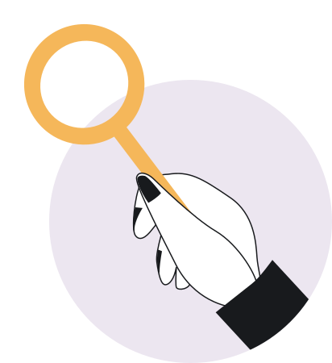
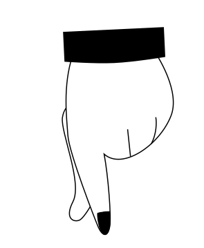
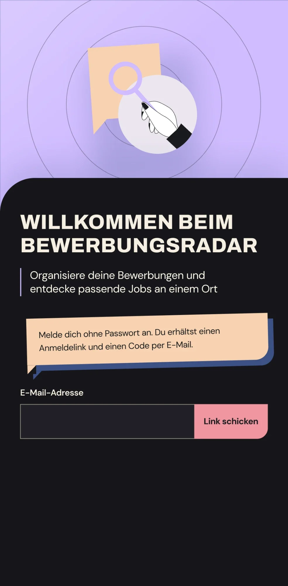
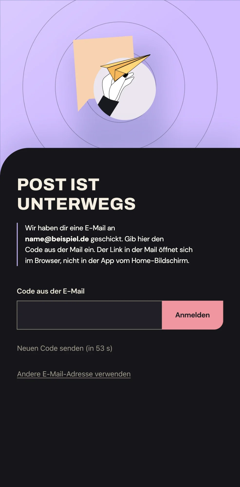
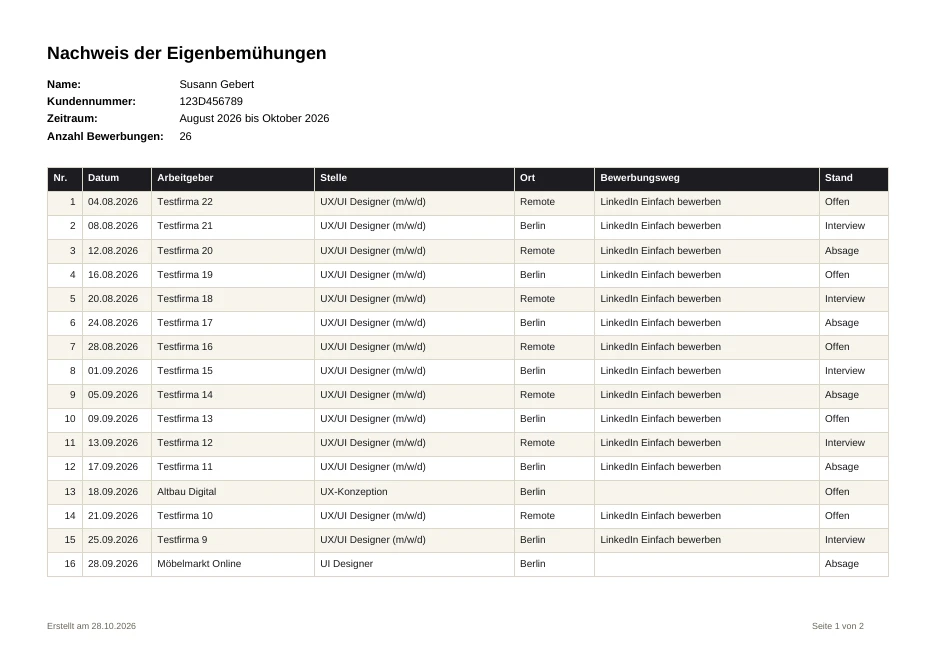
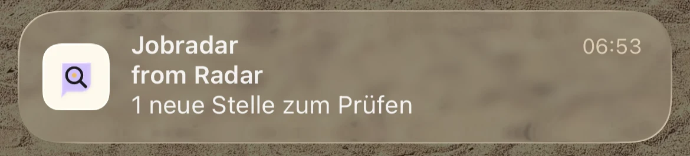

Live · in WeiterentwicklungLive · in active development
Bewerbungsradar: Eine App, die die Jobsuche an einem Ort bündelt Bewerbungsradar: An app that brings the job search into one place
Stellen finden, Bewerbungen ordnen, Eigenbemühungen belegen: Aus meiner eigenen Jobsuche ist eine installierbare Web-App entstanden, die ich konzipiert, gestaltet und mit KI-Unterstützung umgesetzt habe.
Find jobs, organise applications, document your job search: my own job hunt turned into an installable web app that I conceived, designed and built with AI support.
- RolleRole
- Konzept, UX/UI, Flows, Screens, Branding & Illustration, Begleitung der UmsetzungConcept, UX/UI, flows, screens, branding & illustration, guiding the build
- ProjektProject
- Eigenes Produkt · seit Oktober 2026Own product · since October 2026
- UmfangScope
- Wettbewerbsanalyse · Product Thinking · UX/UI-Design · Illustration · Test im EigengebrauchCompetitor analysis · Product thinking · UX/UI design · Illustration · Self-testing in daily use
- Tools
- Figma · Claude Code · React · Supabase · Vercel
Der KontextThe context
Viele Portale, viele Konten, kein ÜberblickMany job boards, many accounts, no overview
Als UX/UI-Designerin auf Jobsuche habe ich meine Bewerbungen in Ordnern, in Figma und in den Jobtrackern von LinkedIn und Indeed verwaltet. Stellen tauchten doppelt auf, der Überblick ging schnell verloren.
As a UX/UI designer looking for a new role, I managed my applications in folders, in Figma and in the job trackers of LinkedIn and Indeed. Listings showed up twice and I quickly lost track.
Dazu kommt die Pflicht, der Agentur für Arbeit regelmäßig die eigenen Bemühungen nachzuweisen. Ein Werkzeug, das all das zusammenführt, gab es nicht. Also habe ich es selbst entwickelt.
On top of that, job seekers in Germany regularly have to prove their efforts to the employment agency. No tool brought all of this together. So I built one.
FindenFind
Passende Stellen kommen jeden Morgen von selbst, mit Begründung, warum sie passen.
Matching jobs arrive every morning, with a reason why they fit.
OrdnenOrganise
Bewerbungen, Status und Unterlagen liegen an einem Ort.
Applications, status and documents live in one place.
BelegenDocument
Der Nachweis für die Agentur für Arbeit entsteht mit einem Klick als PDF.
The proof for the employment agency is a one-click PDF.
Inhaltcontent
Die IdeeThe idea
Aus einem Gedanken wird ein ProduktFrom a passing thought to a product
Am Anfang stand ein einfacher Wunsch: alle Bewerbungen festhalten, neue Stellen nach und nach durcharbeiten und auf Knopfdruck zeigen können, was ich im letzten Monat verschickt habe. Aus einem ersten Prototyp ist Schritt für Schritt eine richtige App geworden.
It started with a simple wish: keep track of every application, work through new listings one by one, and be able to show at the push of a button what I sent last month. Step by step, a first prototype grew into a real app.
„Am besten so, dass ich ein PDF exportieren kann, falls die Jobagentur fragt, wie viele Bewerbungen ich geschickt habe. Dazu ein Jobradar, der Stellen heraussucht, die wir nach und nach durcharbeiten. Ich glaube, dann habe ich einen besseren Überblick.“
“Ideally I could export a PDF in case the job agency asks how many applications I’ve sent. Plus a job radar that picks out listings we work through one by one. I think then I’d have a better overview.”
Zielgruppe: Arbeitssuchende in Deutschland, darunter Menschen mit Nachweispflicht gegenüber der Agentur für Arbeit. Finden und Ordnen ist für alle da, der Nachweis ist ein starkes Extra.
Audience: job seekers in Germany, including people who have to report their efforts to the employment agency. Finding and organising is for everyone; the proof is a strong extra.
WettbewerbsanalyseCompetitor analysis
Alle vier Konkurrenten sind für die USA gebautAll four competitors are built for the US
Ich habe Huntr, Teal, Simplify und Careerflow nach Funktionen, Preisen, Zielgruppe und Bewertungen verglichen. Keiner sucht täglich nach dem eigenen Profil in deutschen Quellen, und keiner erstellt den Nachweis für die Agentur.
I compared Huntr, Teal, Simplify and Careerflow on features, pricing, audience and reviews. None of them searches German sources daily based on your profile, and none creates the proof for the employment agency.
| FunktionFeature | Bewerbungsradar | Huntr | Teal | Simplify | Careerflow |
|---|---|---|---|---|---|
| Bewerbungen mit StatusApplications with status | ● | ● | ● | ● | ● |
| Tägliche Stellen nach ProfilDaily jobs based on profile | ● | ○ | ○ | ◐ USA | ◐ Beta |
| Deutsche QuellenGerman job sources | ● | ○ | ○ | ○ | ○ |
| Nachweis als PDFProof of efforts as PDF | ● | ○ | ○ | ○ | ○ |
| Oberfläche auf DeutschGerman interface | ● | ○ | ○ | ○ | ○ |
● vorhanden · ◐ eingeschränkt · ○ fehlt · Stand Oktober 2026● available · ◐ limited · ○ missing · as of October 2026
Mitgenommen habe ich zwei Dinge: Vorschläge, die zum Profil passen, sind der stärkste Grund, eine App täglich zu öffnen. Und automatisches Bewerben hat die schlechtesten Bewertungen, deutsche Arbeitgeber erwarten ein persönliches Anschreiben. Deshalb hilft die App beim Finden und Ordnen, abgeschickt wird von Hand.
Two takeaways: suggestions that match your profile are the strongest reason to open an app every day. And auto-applying gets the worst reviews; German employers expect a personal cover letter. So the app helps you find and organise, while sending stays manual.
Positionierung: der Bewerbungsbegleiter für Deutschland. Er findet jeden Morgen passende Stellen, hält alle Bewerbungen in Ordnung und erstellt den Nachweis mit einem Klick.
Positioning: the application companion for Germany. It finds matching jobs every morning, keeps every application in order and creates the proof with one click.
VorgehenProcess
Zwölf Schritte, jeder mit meinem ReviewTwelve steps, each one reviewed by me
Die technische Umsetzung hat Claude Code übernommen, ich habe sie fachlich und gestalterisch geführt. Ich habe das Projekt in zwölf Schritte geteilt, nach jedem Schritt das Ergebnis auf dem Handy geprüft und Feedback gegeben, bevor es weiterging. Früh online zu gehen war bewusst: So konnte ich die App im Alltag meiner eigenen Jobsuche testen.
Claude Code handled the technical build while I led it on product and design. I split the project into twelve steps, reviewed every result on my phone and gave feedback before moving on. Going live early was deliberate: it let me test the app in my own day-to-day job search.
Von mirMy part
- Problem, Zielgruppe und PositionierungProblem, audience and positioning
- Wettbewerbsanalyse und FunktionsumfangCompetitor analysis and feature scope
- Informationsarchitektur, Flows und Screens in FigmaInformation architecture, flows and screens in Figma
- Branding, Illustrationen und Texte in der AppBranding, illustrations and in-app copy
- Produktentscheidungen, etwa Hosting in der EU oder Auswertung erst ab drei BewerbungenProduct decisions such as EU hosting or analytics only from three applications
- Review und Freigabe nach jedem der zwölf Schritte, Test im AlltagReview and sign-off after each of the twelve steps, testing in daily use
Mit Claude Code umgesetztBuilt with Claude Code
- Code für Oberfläche, Datenbank und Login (React, Supabase)Code for the interface, database and login (React, Supabase)
- Jobradar als geplante Aufgabe und Push-NachrichtenThe job radar as a scheduled task and push notifications
- Datenumzug aus meinen alten Listen und Veröffentlichung auf VercelMigrating data from my old lists and deploying to Vercel
- Technische Vorschläge, die ich geprüft und entschieden habeTechnical suggestions that I reviewed and decided on
Vom Prototyp zur AppFrom prototype to app
- Fundament: Web-App, Datenbank in Frankfurt, Login ohne PasswortFoundation: web app, database in Frankfurt, passwordless login
- Kern: Stellen, Nachweis und UnterlagenCore: jobs, proof of efforts and documents
- Live im Alltag: Datenumzug, Onboarding, SuchprofilLive in daily use: data migration, onboarding, search profile
- Automatisierung: Jobradar, Analyse, PushAutomation: job radar, analytics, push
Design-IterationDesign iteration
Die Startseite in mehreren Runden geschärftSharpening the home screen over several rounds
Der Reiter „Stellen“ ist die Startseite und hat die meiste Aufmerksamkeit bekommen. Nach drei Feedback-Runden in der App habe ich den Screen in Figma neu entworfen und Frame für Frame umsetzen lassen. Das Ziel: Auf dem Handy sollen sich Stellen zügig abarbeiten lassen, ohne dass die Bedienung im Weg steht.
The “Jobs” tab is the home screen and got the most attention. After three feedback rounds in the app, I redesigned the screen in Figma and had it implemented frame by frame. The goal: on a phone, you should be able to work through listings quickly without the interface getting in the way.


Der erste Entwurf hatte drei Reiter: Stellen, Unterlagen und Nachweis. Der Reiter „Analyse“ kam erst im Lauf der Entwicklung dazu. Daran sieht man, wie das Produkt während der Entstehung gewachsen ist: vom Sammeln und Belegen hin zum Auswerten der eigenen Bewerbungen.
The first draft had three tabs: Jobs, Documents and Proof. The “Analytics” tab was only added later in development. It shows how the product grew while it was being built: from collecting and documenting to analysing your own applications.
01 · Orientierung01 · Orientation
Gruppentitel bleiben stehenGroup headings stay pinned
Die Karten haben ihre Status-Labels verloren. Dafür bleibt die Überschrift („Neu zum Prüfen“, „In Bearbeitung“) beim Scrollen oben stehen, bis die Gruppe endet.
Cards lost their status labels. Instead, the heading (“New to review”, “In progress”) stays pinned while you scroll until the group ends.
02 · Fokus02 · Focus
Zwei Kacheln statt vierTwo tiles instead of four
„Verschickt im November“ und „laufend“, als Sprechblasen. Die linke Kachel zählt den laufenden Monat und hilft direkt beim Nachweis.
“Sent in November” and “active”, shaped as speech bubbles. The left tile counts the current month and feeds straight into the proof of efforts.
03 · Tempo03 · Speed
Wischen statt TippenSwipe instead of tap
Nach rechts wischen markiert eine Stelle als verschickt, nach links verwirft sie. „Neue Stelle“ sitzt als Plus in der Mitte der Navigation und ist von jedem Reiter aus erreichbar.
Swipe right to mark a job as sent, swipe left to discard it. “New job” sits as a plus in the middle of the navigation, reachable from every tab.
Offene Designfrage: Verstehen Nutzer das Wischen?Open design question: do people get the swipe?
Das ist noch nicht getestet. Deshalb bleibt der Papierkorb bei „zu prüfen“ vorerst sichtbar. Für die Suchzeile liegen drei Varianten aus Figma bereit, die sich als A/B-Test vergleichen lassen.
This hasn’t been tested yet, so the bin icon stays visible on “to review” for now. For the search bar, three Figma variants are ready to compare in an A/B test.
IllustrationIllustration
Hands-on bei der JobsucheA hands-on approach to job hunting
Die Hände habe ich selbst als Vektorgrafiken gezeichnet. Sie sind das verbindende Bildmotiv der App: Hände, die etwas tun, statt Stockfotos oder Icons von der Stange.
I drew the hands myself as vector graphics. They are the app’s connecting visual motif: hands taking action, instead of stock photos or off-the-shelf icons.
-

LupeMagnifierWenn noch keine Stellen da sindWhen there are no jobs yet
-
PapierfliegerPaper planeIm Onboarding und nach dem VerschickenIn onboarding and after sending
-

ZeigefingerPointing handIdee: Analyse und Profil-MatchIdea: analytics and profile match
Die FunktionenFeatures
Was die App heute kannWhat the app does today
StellenJobs livelive
Neue Stellen stehen oben, mit einem Satz, warum sie passen. Schnellaktionen führen von „Bewerben“ über „Verschickt“ bis Zusage oder Absage.
New listings appear at the top with one sentence on why they fit. Quick actions lead from “Apply” to “Sent” through to offer or rejection.
NachweisProof of efforts livelive
Zeitraum wählen, PDF erzeugen: A4 quer, mit allen Angaben, die die Agentur erwartet, und Unterschriftszeile.
Pick a period, create the PDF: A4 landscape, with everything the agency asks for and a signature line.
Unterlagen & SuchprofilDocuments & search profile livelive
Lebensläufe und Zeugnisse nach Art und Sprache ablegen, eine Version als „aktuell“ markieren. Das Suchprofil aus dem Onboarding steuert den Jobradar.
Store CVs and references by type and language and mark one version as “current”. The search profile from onboarding drives the job radar.
AnalyseAnalytics livelive später dazugekommenadded later
Bewerbungen pro Monat, Weg vom Versand zur Zusage, Absagegründe und eine Liste zum Nachfassen. Prozentwerte erst ab drei Bewerbungen pro Gruppe.
Applications per month, the path from sending to offer, rejection reasons and a follow-up list. Percentages only from three applications per group.




Jobradar & PushJob radar & push
Jeden Morgen neue Stellen, ohne selbst zu suchenNew jobs every morning, without searching
Ein täglicher Lauf liest das Suchprofil, fragt die Jobbörse der Bundesagentur für Arbeit ab, ergänzt mit einer Websuche und trägt neue Stellen mit dem Status „zu prüfen“ ein. Dubletten werden übersprungen, bestehende Einträge nie verändert. Findet der Radar etwas, kommt eine Push-Nachricht aufs Handy.
A daily run reads the search profile, queries the Federal Employment Agency’s job board, adds results from a web search and saves new listings as “to review”. Duplicates are skipped and existing entries are never changed. When the radar finds something, a push notification arrives on the phone.
- ≤ 10
- neue Stellen pro Laufnew jobs per runEinstellung: ObergrenzeSetting: upper limit
- 1×
- Lauf pro Tag, im Rhythmus des Suchprofilsrun per day, following the profile’s rhythmEinstellung: ZeitplanSetting: schedule
- 6:53
- Uhr: die erste echte Push-Nachrichta.m.: the first real push notificationEigene Nutzung, 2. November 2026Own use, 2 November 2026
Die Werte beschreiben, wie der Radar eingestellt ist, und stammen aus meiner eigenen Nutzung. Sie sind keine Messung mit anderen Nutzern.
These values describe how the radar is configured and come from my own use. They are not measured with other users.

Job-Alerts aus dem eigenen PostfachJob alerts from my own inbox in Entwicklungin development
Für meine eigene Suche baue ich gerade einen Agenten, der die Job-Alerts von Indeed und LinkedIn in meinem Postfach mit auswertet und passende Stellen ebenfalls als „zu prüfen“ einträgt. Das ist ein persönliches Werkzeug für meine Recherche und nicht als Funktion für andere Nutzer der App gedacht.
For my own search, I’m building an agent that also reads the Indeed and LinkedIn job alerts in my inbox and adds matching listings as “to review”. It’s a personal tool for my own research, not a feature meant for other users of the app.
EntscheidungenDecisions
Warum es so gebaut istWhy it’s built this way
VertrauenTrust
Daten in Frankfurt, nur eigene Daten sichtbarData in Frankfurt, only your own data visible
Lebenslauf, Zeugnisse und Kundennummer sind sehr persönlich. Hosting in der EU und eine strikte Trennung pro Konto sind deshalb Grundprinzip, nicht Zusatz.
CVs, references and agency numbers are very personal. EU hosting and strict per-account separation are therefore a core principle, not an add-on.
Ehrliche ZahlenHonest numbers
Auswertung erst ab drei BewerbungenAnalytics from three applications
Prozentwerte aus ein oder zwei Fällen führen in die Irre. Auch danach zeigt die App Hinweise, keine Wahrheiten. Absagegründe werden von Anfang an erfasst, damit die Daten sauber sind.
Percentages from one or two cases are misleading. Even beyond that, the app shows hints rather than facts. Rejection reasons are captured from day one to keep the data clean.
KostenCost
Jobradar als geplante KI-AufgabeJob radar as a scheduled AI task
Statt einer eigenen KI-Schnittstelle läuft der Radar über eine geplante Aufgabe und schreibt direkt in die Datenbank. Das spart laufende Kosten, solange die App nur wenige Nutzer hat.
Instead of a dedicated AI integration, the radar runs as a scheduled task that writes straight to the database. That avoids running costs while the app has few users.
Gelernt im BetriebLearned in production
Die erste Push-Nachricht kam nicht anThe first push notification never arrived
Die Benachrichtigung wurde ausgelöst, bevor die neuen Stellen gespeichert waren. Seit sie danach gesendet wird, kommt sie zuverlässig an.
The notification fired before the new listings were saved. Since it’s sent afterwards, it arrives reliably.
Stand & AusblickStatus & next steps
Eine App, die ich jeden Tag selbst nutzeAn app I use every day myself
In kurzer Zeit ist aus einer Idee eine installierbare App geworden, die meine eigene Jobsuche trägt: Stellen kommen morgens von selbst, Bewerbungen sind an einem Ort, und der Nachweis für die Agentur ist ein Klick.
In a short time, an idea became an installable app that carries my own job search: listings arrive by themselves each morning, applications live in one place, and the proof for the agency is one click away.
Das Projekt zeigt, wie ich als Designerin ein Produkt von der Idee bis live führe: mit klarer Positionierung, kurzen Feedback-Schleifen und KI als Werkzeug für die Umsetzung.
The project shows how I lead a product from idea to launch as a designer: with clear positioning, short feedback loops and AI as a tool for the build.
Noch offen: Getestet habe ich die App bisher nur selbst. Tests mit anderen Arbeitssuchenden haben noch nicht stattgefunden und sind der nächste Schritt.
Still open: So far, I’m the only one who has tested the app. Tests with other job seekers haven’t happened yet and are the next step.
Zur Live-AppOpen the live app (Anmeldung per E-Mail)(sign-in via email)

Mit Nutzern testenTest with users offenopen
Gespräche und Tests mit anderen Arbeitssuchenden, inklusive Wisch-Geste und Suchvarianten.
Interviews and tests with other job seekers, including the swipe gesture and search variants.
Design-FeinschliffDesign polish in Arbeitin progress
Die übrigen Reiter nach meinen Figma-Entwürfen anpassen und die Illustrationen einbauen.
Bring the remaining tabs in line with my Figma designs and add the illustrations.
Mehr QuellenMore sources geplantplanned
Weitere Jobbörsen anbinden und Interviewtermine als Kalendereintrag exportieren.
Connect more job boards and export interview dates to the calendar.